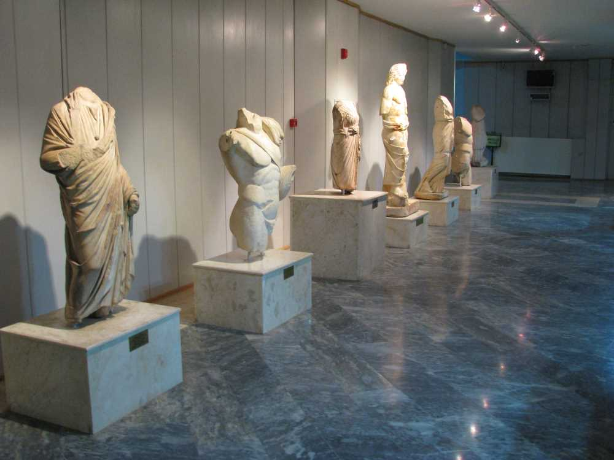
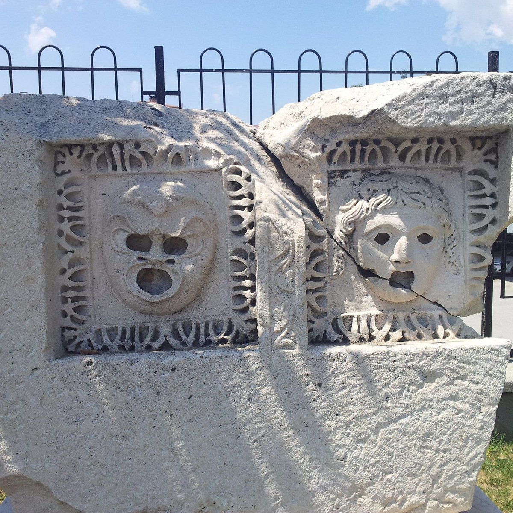
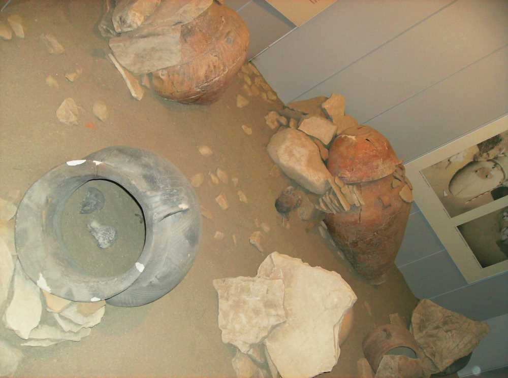

Isparta Müzesi
Isparta’da ilk müzecilik çalışmaları 1933 yılında Halkevi'nin açılmasıyla başlamıştır. Çevreden toplanan arkeolojik eserler ve İslami mezar taşları müze salonu olarak düzenlenen halkevi binasının bir odasında sergilenmiştir. Halkevi'nin kapatılması ile birlikte eserler çeşitli depolara kaldırılmıştır. 1973 yılında Halil Hamit Paşa Kütüphanesi’nin bir odası müze deposu olarak kullanılmış ve ilk müze memurluğu kurulmuştur. Müze binasının temeli 1971 yılında atılmıştır. 1977 yılında yeni müze binasına taşınan eserler burada koruma altına alınmış, müze memurluğu da müze müdürlüğü olmuştur. Müzenin inşaatı 1984 yılında tamamlanmış ve 6 Mart 1985 yılında ziyarete açılmıştır. Müze binası 1997 yılında onarıma alınmış ve 2002 yılında teşhir-tanzim çalışmaları yenilenerek ziyarete hazır hale getirilmiştir. Isparta Müzesi’nde 2008 yılı sonu itibarıyla 2 bin 953 adet arkeolojik, 2 bin 352 adet etnografik, bin 2671 adet sikke olmak üzere toplam 17 bin 976 adet eser bulunmaktadır. Isparta Müzesi’nin sergi salonları, ‘Arkeoloji’, ‘Hazine’, ‘Etnografya’ ve ‘Halı’ olmak üzere dört ana seksiyona ayrılmıştır. Ayrıca; Arkeoloji Salonu’na geçiş kısmında 19'ncu yüzyıla ait Hamamcı Evi’nin kurtarılabilen malzemeleriyle ‘Isparta Evi’ düzenlemesi yapılmıştır. Müzenin ön ve arka bahçelerinde Pisidia Bölgesi mezar stelleri ve mimari parçalar sergilenmektedir. İki katlı müzenin giriş katında bürolar, arşiv, kütüphane, laboratuar, eser belgeleme odası ve sergi salonlarına giriş bulunmaktadır. Alt katta ise halı ve seramik atölyesi, konferans salonu ve depolar yer almaktadır. Müze sergi salonlarına giriş kısmında Aksu ilçesi sınırları içinde Tymbriada Antik Kenti, Sofular Köyü ve Senitli Yaylasından gelen Roma İmparatorluk Çağı Pisidia mezar taşlarının küçük boyutlu örnekleri sergilenmektedir.


